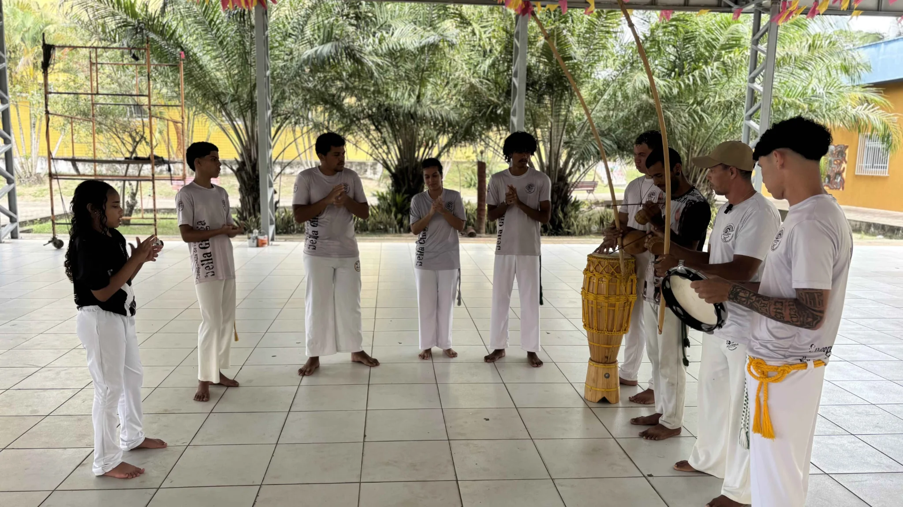

IFRN Canguaretama · Projetos de Extensão
Conhecimentoque ganhao mundo.
Dentro e fora da sala de aula, a extensão aproxima pessoas, ideias e experiências. Conheça três iniciativas do IFRN e os registros de suas atividades.
Explorar projetos
Três caminhos.
Um mesmo campus.
Giras da Paz, ConecTI e Matemática e inclusão social: três iniciativas com públicos, experiências e propostas diferentes, reunidas em um mesmo portal.
Giras da Paz
Capoeira, rimas, cultura interétnica e relações étnico-raciais.
ConecTI
Inclusão digital, saúde, lazer e experiências com a terceira idade.
Matemática e inclusão social
Educação matemática para crianças do Assentamento José Martí/MST.
Aprender também é compartilhar.
Os projetos de extensão criam oportunidades de conectar os conhecimentos do Instituto Federal às vivências da comunidade. Neste trabalho, reunimos informações oficiais, entrevistas e fotografias para apresentar cada iniciativa de forma acessível.
Ver os projetos apresentados